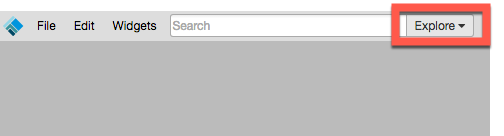
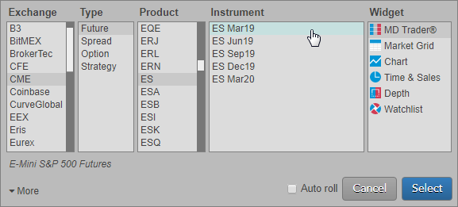
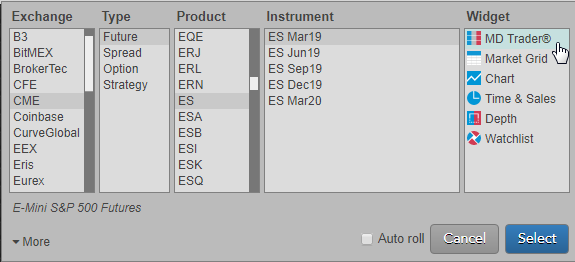
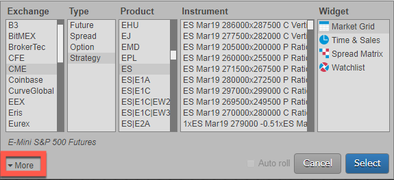
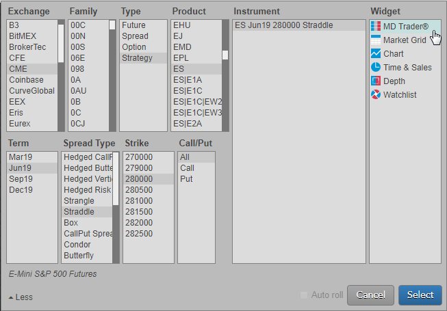
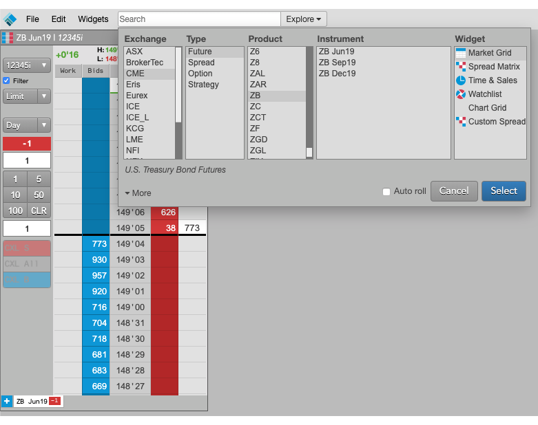
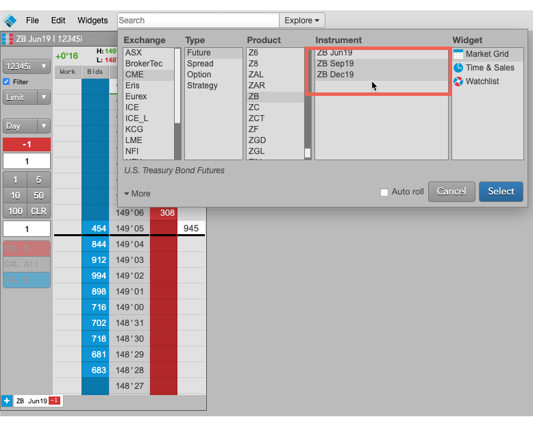
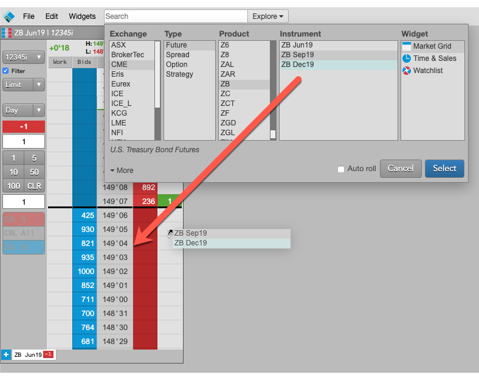
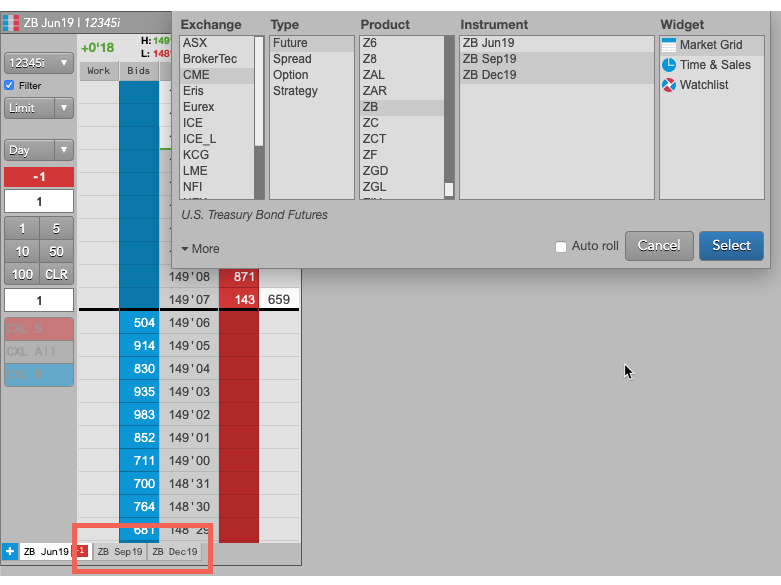

After creating or opening a workspace, you can find an instrument in the Market Explorer in either
Basic mode or Advanced mode and open it in a selected widget. You can also find instruments and drag them to widgets already opened in the workspace.
Finding an instrument using Market Explorer in Basic mode
-
Click Explore next to the Search box in the title bar.

-
Select an Exchange, Type, Product, and Instrument.
Tip: Use Shift-click to select multiple instruments for a product, or just select the product to open all instruments for that product.

Tip: Ctrl-left click on a selected value to unselect it.
Check the Auto Roll checkbox to automatically roll the instrument after its expiry.
-
Click a widget in the Widgets field.

-
Click Select to open the widget for the selected instrument.
Finding an instrument using Market Explorer in Advanced mode
The Advanced mode allows you to easily find options instruments, as well as exchange-defined spread and strategy instruments.
-
Click Explore next to the Search box in the title bar.
-
Select an Exchange, Type, Product, and Instrument.
-
Click More in the bottom left corner of Market Explorer.

-
Select a Term, Spread, Strike, and/or Call/Put as needed based on the selected product type and product.
Note: The Family field is also displayed in Advanced mode.
Tip: Ctrl-Left click on a selected value to de-select it.
The instrument search results are filtered based on your selections.

-
Click an instrument in the Instrument field and click a widget in the Widget field.
-
Click Select to open the widget for the selected instrument.
Dragging instruments to open widgets
In addition to opening new widgets for an instrument in Market Explorer, you can also add instruments to existing widgets by dragging selected instruments onto widgets already open in the workspace.
To drag instruments to open widgets in your workspace:
-
Use the Market Explorer to browse for the desired instruments.

-
Select the desired instruments in the Instruments section.

Note: The Time and Sales widget supports drag-and-drop only for one instrument.
-
Using the left mouse button, drag the selected instruments on to a widget.

When you release the mouse button, the dragged instruments are added to the widget.
